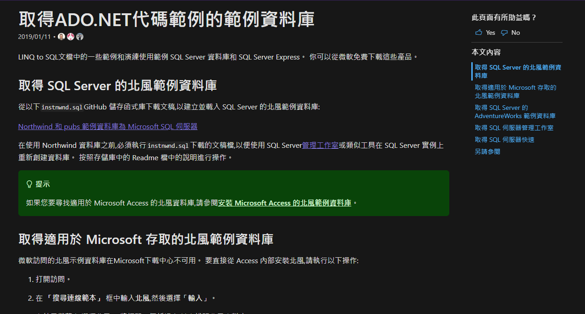
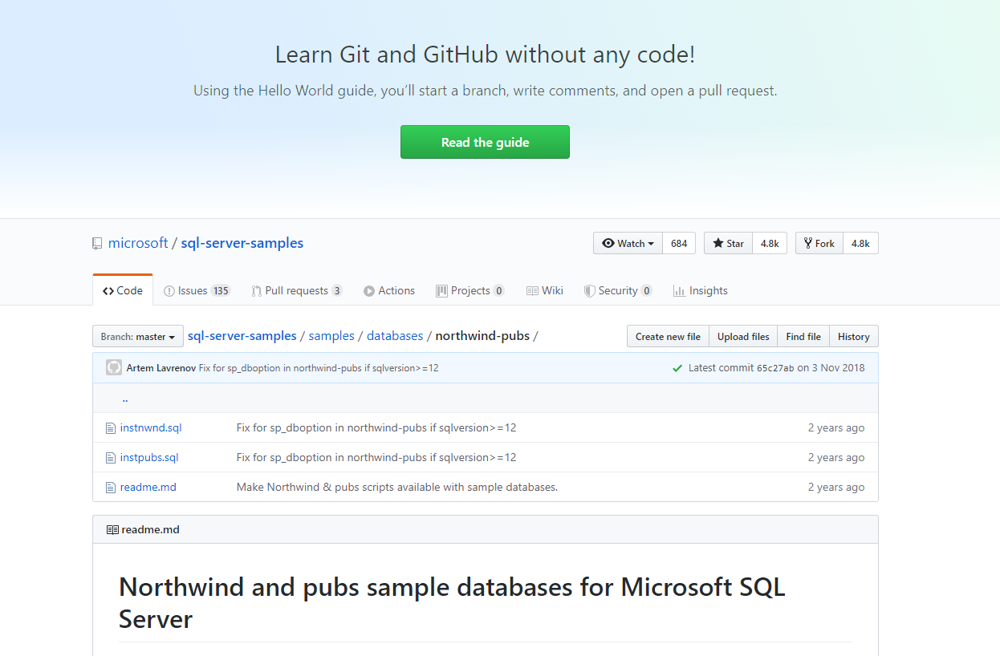
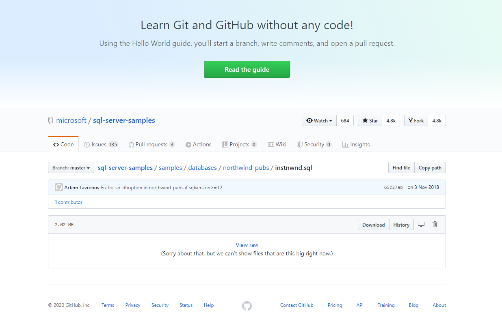
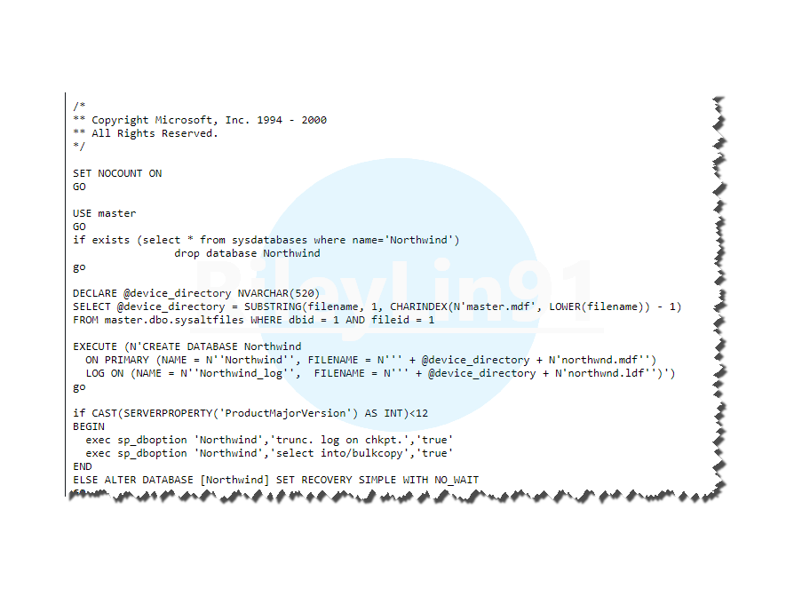
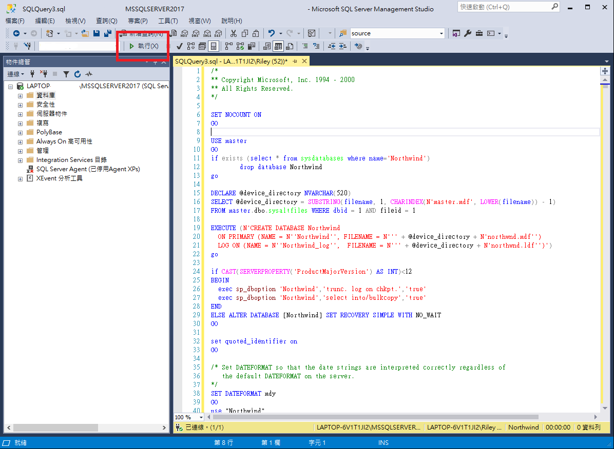
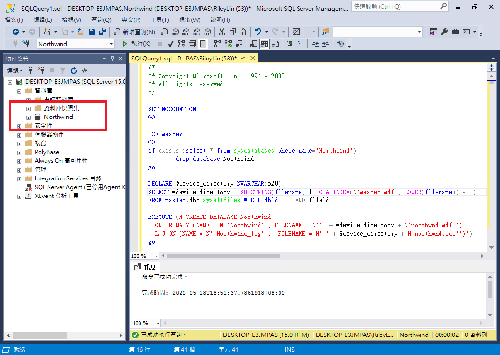

前言
微軟在 SQL Server 2000 提供一個範例資料庫為「Northwind」北風資料庫，由於測試時要避免使用正式資料，以及練習時缺少現成資料，每次都要先花時間建測試資料庫，在建測試資料，花時間又麻煩，不如只花一次時間建好測試資料庫，遇到需要時就可以馬上使用。
然而今天要匯入北風資料庫時，發現微軟以往的下載網址已經移除，吐回 Error404 頁面，於是尋找一番終於找到新的下載位址，還好是移至新位址，不然沒有北風有點麻煩阿…
經實際操作，比以往更方便建置，馬上來看！
開始
Step 1
開啟 官網連結 取得北風資料庫

Step 2
點擊畫面連結，前往 GitHub
Northwind 和 pubs 範例資料庫為 Microsoft SQL 伺服器

Step 3
點擊 instnwnd.sql 並 Download

Step 4
按下 Download 並非真的下載，會於瀏覽器呈現 Script

Step 5
將 Script 全部複製，開啟 SSMS 執行 Script

Step 6
建置北風資料庫成功！如果資料庫節點下沒有看到北風，重新整理即可。
